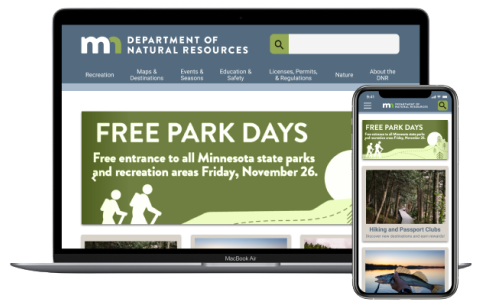
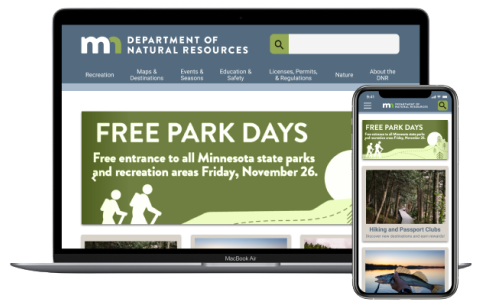

Hi! I'm Amanda
Storyteller, UX/UI Designer, Amateur Crafter
Hi! I'm Amanda
Storyteller, UX/UI Designer, Amateur Crafter


Not every story is about castles and far away lands, in fact, those aren't even my favorite stories to tell. In fact, here's a story about an animal rescue and how their KPI's improve with an updated User Interface:
Non-profit Website Redesign

Research
Research Content 1
Research Content 2
Research Content 3
Research Content 4


It's Nice to Meet You!
Growing up in Minnesota, I was taught to two things:
bearing the cold and telling good stories.
I use this talent in my work as UX Researcher.
Specializing in UX Research and Design, I love
sitting down with users and filling in what their
side of the story looks like. With their help,
I build a comprehensive understanding, and solve
user problems before they become pain points.
To mention a few of the tools I use to get between
point A and point B, my skills include; Figma,
Miro, InVision, JIRA, Qualitative Interviews,
& Project Management.
Let's create something beautiful that makes
the users' days a little brighter, together!
My Work
 
 Government Website Design Challenge
Case Summary: The Minnesota
Department of Natural Resources
(DNR) website is difficult for users to
navigate and has an unappealing user
interface. An emphasis usability,
focusing on information architecture,
responsive web design, and visual
design gives the experience new life.
Non-profit Website Design Challenge
Case Summary: The existing
Midwest Animal Rescue & Services
(MARS) website is difficult for users
to navigate and has an unappealing
user interface. An emphasis usability,
focusing on visual elements,
responsive web design, and
searchability enhances experiences.


iOS Application Design Challenge
Case Summary: The Minnesota
Department of Natural Resources
(DNR) website is difficult for users to
navigate and has an unappealing user
interface. An emphasis usability,
focusing on information architecture,
responsive web design, and visual
design gives the experience new life.